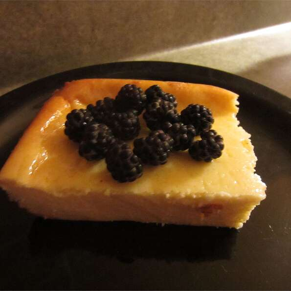

Cheesecake

Description
This is a cheesy dish to be baked.
It should be baked in a medium depth fire safe dish.
Ingredients
- 500g cheese
- 100g flour
- 200g sugar
Directions
- Preheat oven to 350 degrees F (175 degrees C). Grease one 8x8 inch square pan.
- Place the cream cheese, milk, sugar, corn starch and vanilla in a blender and puree. Add the eggs one at a
time after the last egg has been added blend mixture for 7 minutes. Pour batter into the prepared pan and
sprinkle top with cinnamon.
- TBake at 350 degrees F (175 degrees C) for 1 hour. Let cheese cake cool in oven for one hour. Then place in
the refrigerator for at least 3 to 4 hours before serving.
Cover with aluminum foil.
Return to Main Page